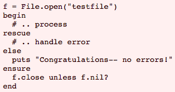
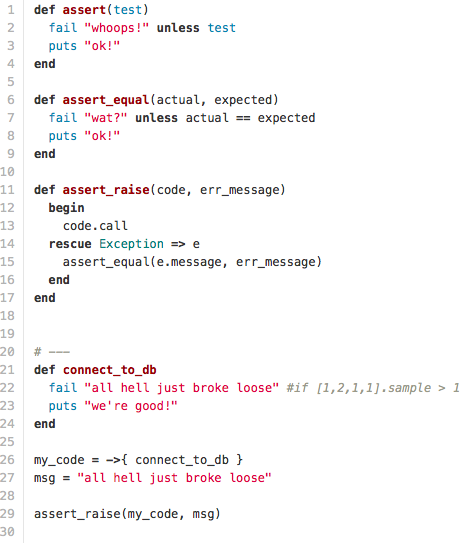
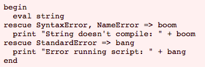

Exceptions, Catch, and Throw
In the last blog post, we were able to learn about blocks, procs, and lambdas in Ruby. So when would you use these things? You can create your own methods that now will be able to take a snippet(block) of code, but also you can now handle error messages gracefully.
I've made alot of mistakes in my programming career and every time that I've made a mistake, I received the dreadful error messages in my terminal that causes my program to come to a screeching halt. Catching errors by throwing exceptions allow you to package up information about an error into an object which allows you to manipulate it in your script. The syntax of a standard error message is as follows.
Reference here. Now let's take a look at a DBC example.
On line 26 you create a lamda that takes the method connect_to_db. Connect_to_db method is created on ine 21-24. As you try to raise your assertion on line 29, your lambda my_code is inserted into the assert_raise method.
The begin on line 12 will evaluate my lambda, the rescue Exception will take my Exception from the terminal and store it as an object(e) and then raise line 15 as a way to gracefully output your error. On line 15, the method message is an Exception instance method that allows you to gracefully output the error as a string. More on Exception methods here. Sidenote: it is bad form to try and catch the parent Exception as this example does on line 14. Rather, you should always try to catch the children Exceptions such as NoMemoryError, ScriptError, and ArgumentError. An example of this is featured below.
